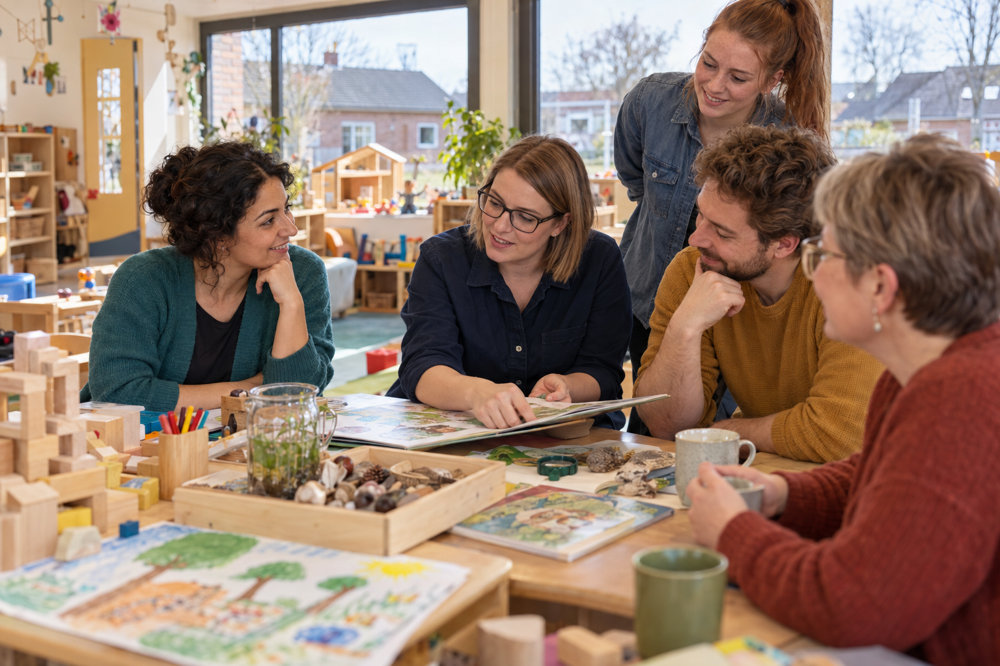

Fachkompetenz
Ich kann Alltagstheorie und wissenschaftliche Erkenntnis anhand der Fallmaterialien fachlich erklären und daraus eine begründete Aussage für „Positionspapier zur professionellen Berufsrolle“ ableiten.

Ihr prüft Emilias Alltagserklärungen in der Teamsitzung und klärt, was eine fachlich begründete pädagogische Berufsrolle ausmacht.

Vielleicht kennt ihr das: Jemand sagt über ein Kind „Der braucht einfach strengere Regeln“ oder „Die ist eben so“. Solche schnellen Erklärungen klingen oft überzeugend – professionell sind sie deshalb noch lange nicht. Wenn ihr mit Kindern, Jugendlichen oder Familien arbeitet, werden Menschen eure Einschätzung ernst nehmen und Entscheidungen darauf stützen. Deshalb ist es spannend herauszufinden, was eine pädagogische Fachkraft eigentlich von jemandem unterscheidet, der nur aus dem Bauch heraus urteilt. In dieser Lernsituation entwickelt ihr euren eigenen professionellen Blick – und merkt dabei, dass Pädagogik viel mehr ist als „gut mit Menschen können“.
Ich kann die Handlungssituation zu „Berufsrolle begründen“ fachlich analysieren, eine begründete Entscheidung treffen und in das Produkt „Positionspapier zur professionellen Berufsrolle“ überführen.
Ich kann Alltagstheorie und wissenschaftliche Erkenntnis anhand der Fallmaterialien fachlich erklären und daraus eine begründete Aussage für „Positionspapier zur professionellen Berufsrolle“ ableiten.
Ich kann eine eigene Vorannahme zu „Berufsrolle begründen“ überprüfen und meine Verantwortung sowie offene Fragen benennen.
Ich kann unterschiedliche Sichtweisen zu „Berufsrolle begründen“ abgleichen und meinen Beitrag zur gemeinsamen Entscheidung belegen.
Ich kann die Fallinformationen zu „Berufsrolle begründen“ strukturieren, mindestens zwei Optionen anhand transparenter Kriterien vergleichen und meinen Entscheidungsweg dokumentieren.
Ich kann die Quellen meines Handlungsergebnisses „Positionspapier zur professionellen Berufsrolle“ kenntlich machen und das digitale Ergebnis lesbar sowie überprüfbar aufbereiten.